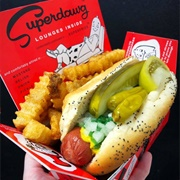

Chicago Style Hot Dog

Ingredients
- 4 beef hot dogs
- 4 poppy seed buns
- 4 tablespoons yellow mustard
- 4 tablespoons sweet relish
- 2 small tomatoes, quartered
- 1/2 white onion, diced
- 4 Kosher dill pickle spears
- 8 sport peppers
- 1 teaspoon celery salt
Preparation
- Boil the hot dogs in water until the hot dogs rise to the surface. Remove from the water and place into buns.
- Squeeze about 1 tablespoon of mustard onto each hot dog, then spoon on about 1 tablespoon of sweet relish. Nestle the tomato wedges into the bun, then sprinkle diced onion over the mustard and relish.
- Add 1 pickle spear to each hot dog, wedging the pickle between the dog and the bun. Add two sport peppers to each, then sprinkle each hot dog with 1/4 teaspoon of celery salt. Serve immediately.
Thanks to this website for the recipe!